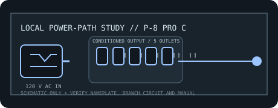

[ RACKMOUNT LINE CONDITIONER // EXACT MODEL ]
Furman P-8 PRO C
20 A rackmount conditioner with five high-current outlets, SMP+, LiFT and EVS protection. It does not regulate voltage or provide battery backup.

ARCHIVAL IDENTIFICATION: Preserve exact model and regional suffix, nameplate, serial/date code, outlet map, manual revision and observed condition. Similar product-family names do not prove electrical equivalence.
Model specifications
| Manufacturer / exact model SKU | Furman P-8 PRO C. Verify full regional suffix and revision from the physical nameplate. |
|---|---|
| Catalog category / topology | Line conditioners — rackmount AC conditioner; automatic voltage regulator. No battery or stored-energy backup. |
| Input voltage / supported range | 120 V AC nominal North American supply; this conditioner does not regulate voltage, so no AVR input capture range is specified. |
| Output voltage / range | Nominal 120 V AC line-through output, following the source rather than regulating it. |
| Capacity / current | 20 A maximum aggregate rating; all five 20 A outlets share the unit and branch-circuit capacity. |
| Regulation / conditioning functions | SMP+ surge protection, LiFT AC-noise filtering and EVS shutdown; rackmount steel chassis with rear BNC lamp connector. No AVR. |
| Outlets / connectors | Five 120 V, 20 A AC outlets per manufacturer datasheet. |
| Response / continuity | Continuous line-through conditioning; no voltage-correction or battery-transfer time. The manufacturer datasheet specifies 1 ns surge response. No backup runtime. |
| Compatibility | Grounded 120 V equipment requiring a 20 A circuit, with a matching 20 A input connection; suitable for rack loads within shared aggregate rating. Not voltage-regulated or UPS-backed. |
| Electrical safety / installation limits | Requires properly grounded, correctly rated 20 A branch wiring and connector. Do not use an adapter to connect to an undersized circuit; maintain earth, ventilation and load limits. Follow exact manual. |
Service and archival notes
- Record the AC source, loaded current, connected equipment, observed voltage and test conditions separately from manufacturer-rated values.
- This is a conditioning/distribution appliance, not a UPS: it cannot maintain output through a mains interruption.
- Never open energized mains equipment. Quarantine units with damaged cords, overheated connectors, compromised enclosure or grounding, or evidence of liquid ingress.
- Use the exact regional manual/nameplate for connector, branch-circuit, mounting, grounding and load requirements; this static record is not an installation approval.
Manufacturer sources and manual
- Furman manufacturer product page — P-8 PRO CProduct-family overview and manufacturer-stated functions. Confirm the complete model label and regional variant.
- Furman official operating manual — P-8 PRO CManufacturer instructions for ratings, connections, operation and electrical safety.
- Furman official datasheet — P-8 PRO CManufacturer model specifications; ratings and feature details are revision-sensitive.